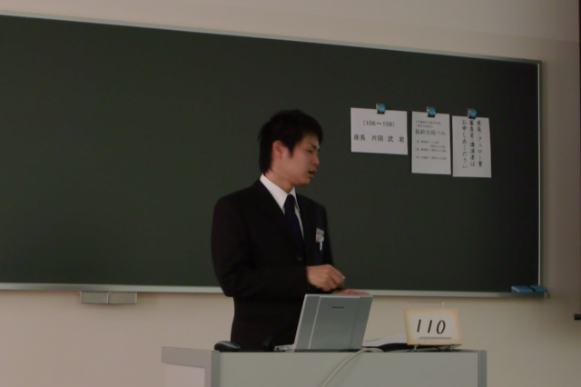
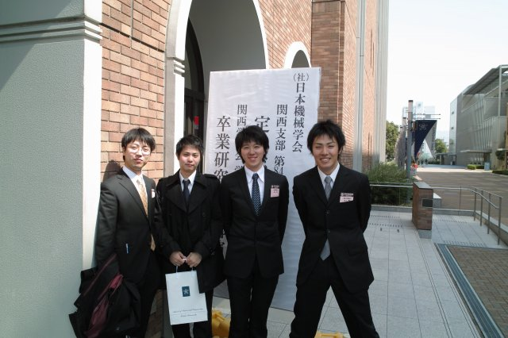
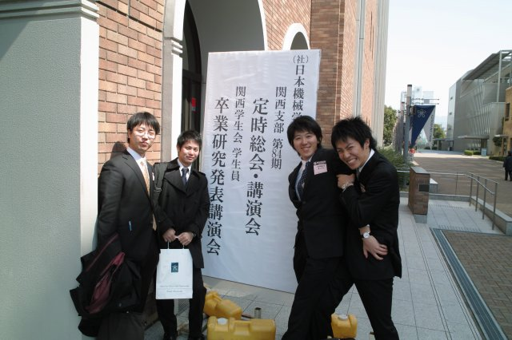
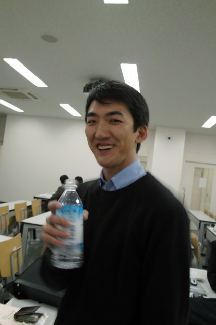
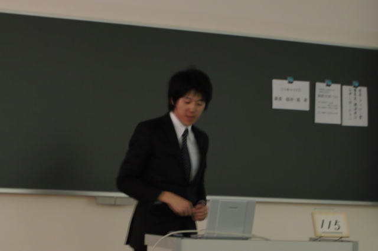
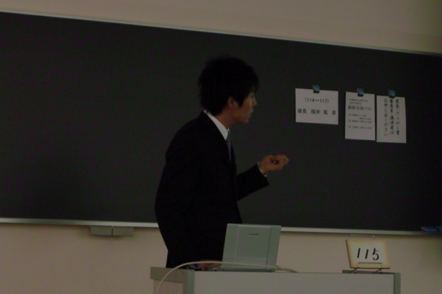
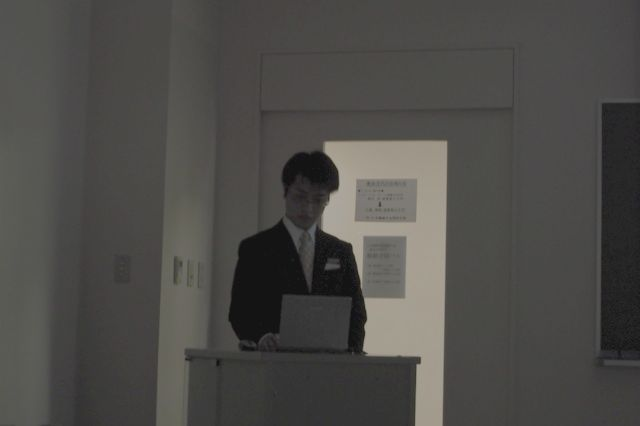
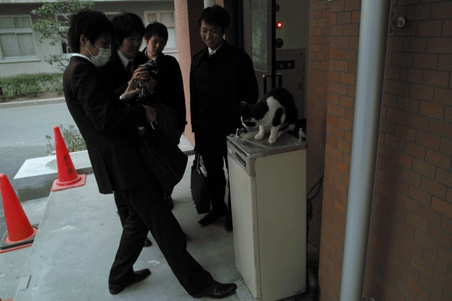
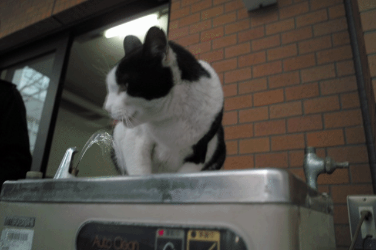

何度も発表した人も，学会デビューの人も納得のいく発表ができました．

カテドラルな講演会場
本番に強いK林くん，8つの質問に妥当な回答
M田くん，看板見えませんよ
量多すぎ！＠カロリー
限りなく私服な助教曰く，襟付きは正装だそうです
学会は慣れたもんですよとM田くん
今日は日本語なので楽ですよとH田くん
移動中，M野くん緊張レベル上昇中
K林くん曰く，いつもどおりやればいいんですよ（余裕）
M野くん学会デビュー
完全なる利害の一致
そうだ，オレのためにペダルを踏むんだ
| ・（社）日本機械学会関西支部第84期定時総会講演会＠近畿大学本部キャンパス (H21.03.17) | |||
何度も発表した人も，学会デビューの人も納得のいく発表ができました． |
|||
|
カテドラルな講演会場 |

本番に強いK林くん，8つの質問に妥当な回答 | ||
|

M田くん，看板見えませんよ |

| ||
|
量多すぎ！＠カロリー |

限りなく私服な助教曰く，襟付きは正装だそうです | ||
|

学会は慣れたもんですよとM田くん |

今日は日本語なので楽ですよとH田くん | ||
|
移動中，M野くん緊張レベル上昇中 |
K林くん曰く，いつもどおりやればいいんですよ（余裕） | ||
|

M野くん学会デビュー |
|||
|

完全なる利害の一致 |

そうだ，オレのためにペダルを踏むんだ | ||